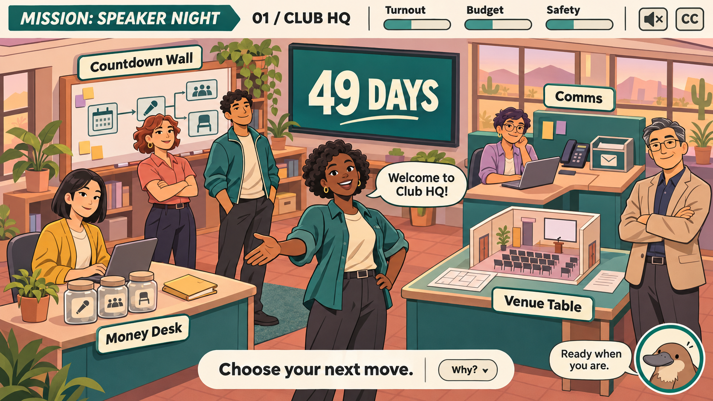
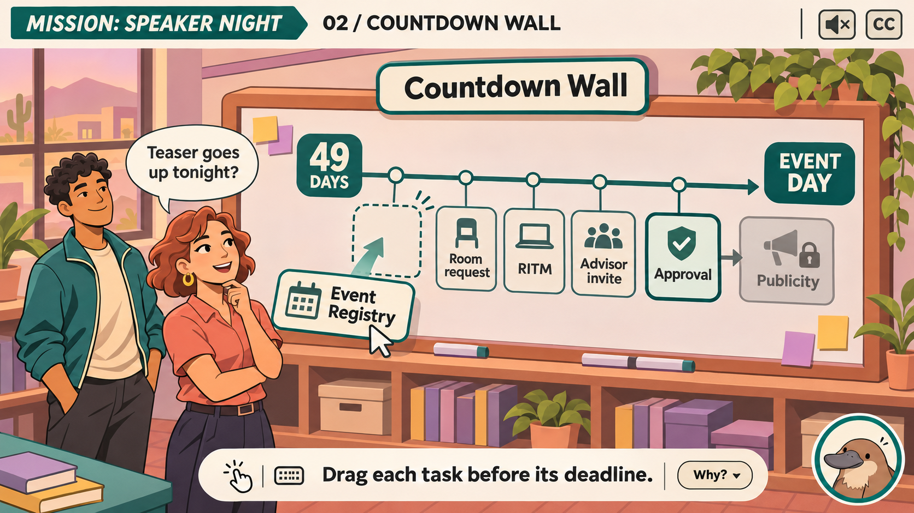
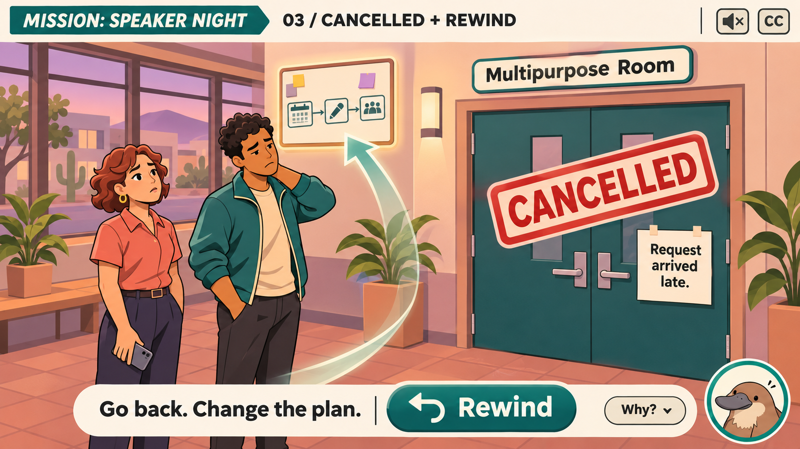
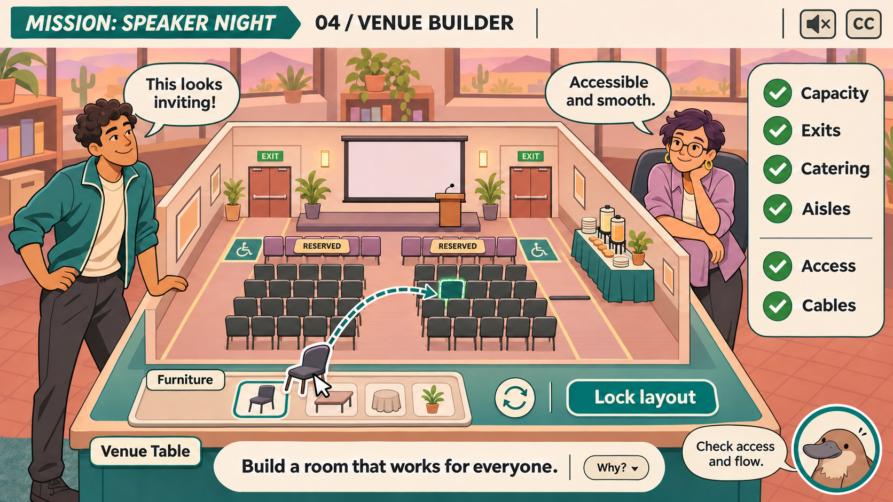
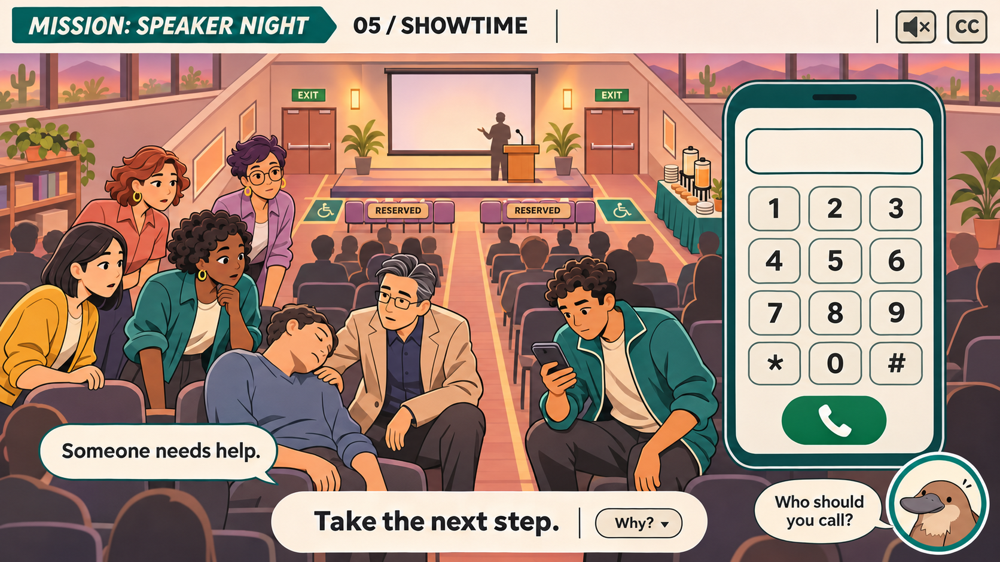
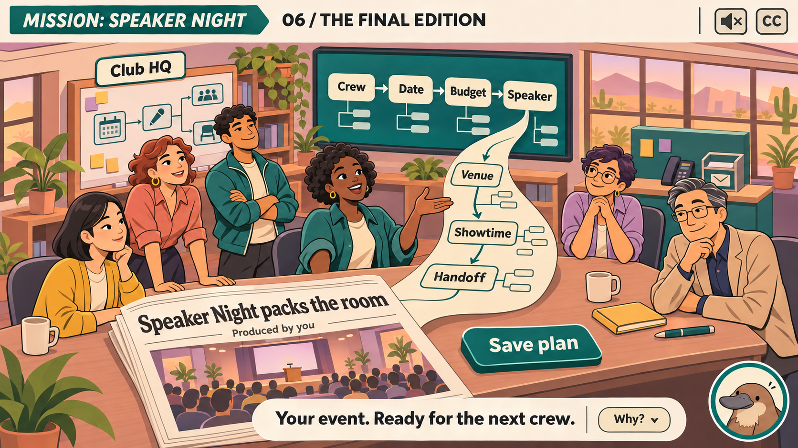

Mission: Speaker Night
One crew. One visual world. Six moments from planning to handoff.


Meet the crew and choose among the four workstations.


Drag tasks onto the timeline; publicity stays behind approval.


See a late-request consequence, then rewind and change the plan.


Build the room with six visible venue and accessibility checks.


Choose the next emergency action without a countdown.


Celebrate the event with a newspaper and its seven-stage flow.
Shared visual direction
Warm desert-campus light, deep teal, consistent adult characters and Pip. Sound starts muted, captions remain visible, and the emergency moment has no countdown. The venue's reserved front seating and accessible spaces were corrected before the live-event frame was produced.
Click a frame to open its unchanged full-size PNG. These are static visual references for review; the later playable sample includes the prologue, HQ, Countdown Wall and Venue Builder.